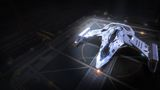

Top speed / boost
299 / 398 m/s (fast)
Gutamaya's take on the classic dogfighter trades one small hardpoint for a medium and adds speed and a little hull, while preserving the Eagle's signature agility. Still very fragile — it sits at the bottom of the combat bracket alongside its sibling — but it's the more capable of the two budget dogfighters and a stylish Imperial thrill to learn agility in.

This ship's 1–100 suitability rating reflects its fully-engineered fit for this role, scored against every ship in the role. See how ships are rated.
The Imperial Eagle is Gutamaya's elegant reworking of Core Dynamics' dogfighter. It keeps the Eagle's tiny, agile airframe but tunes it for the Empire: faster top speed, a slightly tougher hull, and a hardpoint upgrade that swaps one small mount for a medium — meaningfully more bite. It's the same nimble dart, made quicker, prettier and a little more substantial.
It remains, however, a glass cannon. Its hull and shields are still thin, it has one utility and one small military slot, and its three guns — though now including a medium — still deal modest damage. The Imperial Eagle wins the same way its sibling does: through speed and agility, staying off the enemy's guns. It's the more refined budget dogfighter, but no less unforgiving of mistakes.
Fast, agile budget combat: dogfighting practice with a little more punch and speed than the base Eagle, low-stakes RES, and stylish cheap thrills for pilots who fly the Empire.
Four things define the Imperial Eagle as a combat ship:
It's still very fragile — thin hull and shields, one utility, a class-3 plant and only three guns. The medium mount and extra hull help, but it can't tank or out-damage the dedicated small fighters, and it sacrifices a touch of the base Eagle's pure agility for its speed. It's the more refined glass dart, but a glass dart still.
Elite agility and a 480 m/s engineered top end carry it, but 1M·2S firepower on a class-3 plant with a ~104 MJ shield and 108 armour keep it bottom-bracket.
The 54/100 headline is a verdict against the combat role's priority-ordered factors. Each factor carries a weight (its share of 100); this hull earns part of each based on how it performs against the whole field. The points sum to the rating.
| Role factor | Score | Why this score |
|---|---|---|
| Hardpoints | 15/30 | 1 Medium + 2 Small mounts; the medium adds real bite over the base Eagle's 3S, but it trails every priced-up small fighter (Cobra Mk V 3M 2S, Courier 3M, Vulture 2L). Engineered Overcharged Corrosive multi-cannon plus two pulses is only medium sustained DPS. |
| Power distributor | 5/10 | Only a class-2 power distributor — sustaining three guns plus boost is tight, needing Charge Enhanced + Super Conduits to hold up. Adequate for a three-gun fit but never a strength. |
| Shield | 6/15 | ~104 MJ base shield, ~190 MJ A-rated, only reaching ~360 MJ engineered through a 3C bi-weave and one Heavy-Duty booster. Thin even fully built; it survives by not being hit. |
| Armour & internals | 6/15 | 108 base armour on a 50 t hull, one class-2 military slot and modest internals (3·2·1·1·1·1). Even with Heavy-Duty hull reinforcements it reaches only ~450 effective armour — paper-thin and the hull's weakest trait. |
| Agility | 18/20 | Excellent base agility rising to elite engineered, with 299/398 m/s stock and ~480 m/s boost after Dirty Drives. Role-leading handling and the entire reason the ship is flyable in combat. |
| Utility & flexibility | 4/10 | Only one utility mount, forcing the single shield booster to do all defensive work. Offset slightly by small-pad docking anywhere and no rank or permit gate at ~73k Cr, but flexibility is minimal. |
| Weighted total | 54/100 | Matches the headline suitability rating for this ship in this role. |
Weights are an editorial decomposition of the role's stated priority order — not an in-game formula. Bar length shows how fully each factor is earned; the longest factors carried the score, the shortest are where it gave points away. See how ships are rated.
Both tables rate ships for the combat role specifically. The role column is the hardpoint loadout — the raw weapon mounts behind the damage.
| Ship | Class | Hardpoints | Pros & cons vs Imperial Eagle | Rating |
|---|---|---|---|---|
| Vulture | Small | 2L | Two large guns; elite agility; real tankFar pricier; power-starved | 80 |
| Cobra Mk V | Small | 3M 2S | Five guns; tough; fastFar pricier | 78 |
| Imperial Courier | Small | 3M | Far stronger shields; three medium gunsImperial rank; paper armour | 70 |
| Viper Mk IV | Small | 2M 2S | Tougher; more utilitiesLess agile; slower | 66 |
| Viper Mk III | Small | 2M 2S | More guns; cheapSlightly slower; thinner | 63 |
| Diamondback Scout | Small | 2M 2S | Cool-running; four utilities; tougherSlower; less agile | 60 |
| Cobra Mk III | Small | 2M 2S | Versatile; cargo; tougherLess agile | 58 |
| Eagle Mk II | Small | 3S | Even more agile; cheaperSmaller guns; thinner; slower | 55 |
| Imperial Eagle this | Small | 1M 2S | — this hull (baseline) | 54 |
| Sidewinder Mk I | Small | 2S | Free; tougherFar less agile and fast | 40 |
The Imperial Eagle and the base Eagle are the two budget dogfighters — the Imperial trades a sliver of agility for more speed, a medium gun and a little hull. It's the more refined of the pair, but both sit at the bottom of the bracket on durability. Buy either to learn agility cheaply; buy a pricier hull to actually win durable fights.
| Ship | Class | Hardpoints | Pros & cons vs Imperial Eagle | Rating |
|---|---|---|---|---|
| Fer-de-Lance | Medium | 1H 4M | Agile duelling king with a huge gunMedium pad; vastly pricier | 93 |
| Vulture | Small | 2L | Keeps the agility, adds two large guns and tankFar pricier; power-starved | 80 |
| Cobra Mk V | Small | 3M 2S | The do-everything small upgradeFar pricier | 78 |
| Imperial Courier | Small | 3M | The Imperial shield-tank skirmisher step-upImperial rank; paper armour | 70 |
| Eagle Mk II | Small | 3S | The slightly more agile, cheaper siblingSmaller guns; slower; thinner | 55 |
Like the base Eagle, the Imperial Eagle is a teacher and a stepping-stone. The Vulture keeps the agility while adding firepower and tank; the Imperial Courier is the natural Imperial-flavour step-up. Master the Imperial Eagle and more capable agile ships come easily.
At ~73k Cr the Imperial Eagle is very cheap — pricier than the base Eagle but still trivial — sold at Imperial-aligned stations with no rank gate. Its small modules keep engineering inexpensive.
It's a value-and-style pick: a near-free, stylish Imperial dogfighter to learn agility in, or a cheap thrill to fly for its handling. Few keep one long, but it's a charming budget fighter for Empire pilots.
Under 75k credits for a fast, agile Imperial dogfighter with a medium gun — the prettier, punchier budget dart, sold at Empire stations.
A fast, agile dogfighting fit built around the medium gun. Initial is buy-only; A-rated is the combat-ready baseline; Engineered maximises agility, speed and the thin shield.
| Slot | Initial · buy-only | A-Rated · no eng | Engineered | Notes |
|---|---|---|---|---|
| Hardpoints | ||||
| Medium 1 | 2F Pulse Laser (Gimballed) | 2F Multi-Cannon (Gimballed) | G5 Overcharged + Corrosive Shell | The ship's main gun — buy a cheap pulse, swap to a gimballed multi-cannon once A-rated; Overcharged + Corrosive Shell makes it the alpha source. |
| Small 1 | 1G Pulse Laser (Gimballed) | 1G Pulse Laser (Gimballed) | G5 Efficient + Thermal Vent | Supporting small pulse; Efficient + Thermal Vent keeps it firing cold on the thin power budget. |
| Small 2 | 1G Pulse Laser (Gimballed) | 1G Pulse Laser (Gimballed) | G5 Efficient + Thermal Vent | Second small pulse; Efficient + Thermal Vent for sustained heat-free chip damage. |
| Utility Mounts | ||||
| Utility 1 | 0A Shield Booster | 0A Shield Booster | G5 Heavy Duty + Super Capacitors | The only utility mount — a shield booster; Heavy Duty multiplies the thin bi-weave's raw MJ. |
| Core Internals | ||||
| Power Plant | 3E Power Plant | 3A Power Plant | G5 Overcharged + Thermal Spread | Only a class-3 plant, so Overcharged buys the headroom for three guns, shield and booster; Thermal Spread bleeds the extra heat. |
| Thrusters | 3E Thrusters | 3A Thrusters | G5 Dirty Drive Tuning + Drag Drives | A-rate and engineer FIRST — speed and agility are this hull's only real defence; Dirty Drives + Drag Drives maximise both. |
| Frame Shift Drive | 3E Frame Shift Drive | 3A Frame Shift Drive | G3 Increased Range (no experimental effect) | A-rated to reach RES sites and turn-ins; G3 Increased Range is enough — combat doesn't need a jump monster. |
| Life Support | 1E Life Support | 1D Life Support | G5 Lightweight (no experimental effect) | D-rate to save mass, Lightweight trims more; life support has no experimental effect. |
| Power Distributor | 2E Power Distributor | 2A Power Distributor | G5 Charge Enhanced + Super Conduits | A-rate early — sustaining three guns plus boost on a class-2 distributor is tight; Charge Enhanced + Super Conduits fix it. |
| Sensors | 2E Sensors | 2D Sensors | G5 Lightweight (no experimental effect) | Drop to D and go Lightweight; combat needs no sensor range, so save the mass on a featherweight hull. |
| Fuel Tank | 2C Fuel Tank | 2C Fuel Tank | (No blueprint available) | Stock tank; fuel capacity is fixed and cannot be engineered. |
| Military Slots | ||||
| Military 1 | 2D Hull Reinforcement | 2D Hull Reinforcement | G5 Heavy Duty + Deep Plating | Heavy-Duty hull reinforcement in the military slot is the cheapest large multiplier on a paper-thin hull. |
| Optional Internals | ||||
| Size 3 | 3E Shield Generator | 3C Bi-Weave Shield Generator | G5 Reinforced + Fast Charge | Bi-weave shield generator — the thin shield needs fast regen; Reinforced raises its MJ and Fast Charge speeds the recharge. |
| Size 2 | 2E Cargo Rack | 2A Shield Cell Bank | G4 Specialised (no experimental effect) | Optional / low-priority — Specialised cuts the cell bank's heat and power spike. Burst shield healing for emergencies. |
| Size 1 | — | 1D Hull Reinforcement | G5 Heavy Duty + Deep Plating | Small hull reinforcement; Heavy Duty for a little more effective armour on the thin hull. |
| Size 1 | — | 1D Module Reinforcement | (No blueprint available) | Module Reinforcement spreads penetrating-hit damage across internals; not engineerable. |
| Size 1 | — | 1I Detailed Surface Scanner | G5 Expanded Probe Scanning Radius (no experimental effect) | Optional / low-priority — Expanded Probe Scanning widens probe coverage. Maps planets for exploration data. |
| Size 1 | — | 1A Shield Cell Bank | G4 Specialised (no experimental effect) | Optional / low-priority — Specialised cuts the cell bank's heat and power spike. Burst shield healing for emergencies. |
| Open in planner / Export | ||||
| Open in Coriolis | open | open | open | One-click open at coriolis.io. |
| Open in EDSY | open | open | open | One-click open at edsy.org. |
| Copy SLEF | Copies the raw Ship Loadout Export Format for that state. | |||
Like the base Eagle, the Imperial version survives by not being hit — engineer thrusters and a bi-weave, lead with the medium gun, and stay on the enemy's blind side. The extra speed helps you disengage; the thin hull still punishes mistakes.
Buy the hull (~73k Cr) at an Imperial station and fit a 3E shield generator, the 0A shield booster, and the military-slot 2D hull reinforcement.
Arm all three hardpoints with cheap gimballed pulse lasers buy-only — a 2F on the medium and a 1G on each small. The multi-cannon comes at the A-rated stage.
Leave the four size-1 optional slots empty for now (—) and carry a cheap cargo rack in the size-2 bay; A-rating fills the internals with shield cells, a hull reinforcement and the scanner.
Fly fast and agile — lead with the medium gun, stay on tails, disengage if shields fall.
A-rating priority for a fast dogfighter:
As with its sibling, agility plus speed is the Imperial Eagle's only real defence — A-rate and engineer thrusters before anything else.
The house combat pattern bent toward agility and speed. Pin blueprints for remote G1→G5 application; visit in person for experimentals.
| Module | Blueprint | Experimental | Engineer |
|---|---|---|---|
| Thrusters (3) | Dirty Drive Tuning (G5) | Drag Drives | Professor Palin / Mel Brandon |
| Power Plant (3) | Overcharged (G5) | Thermal Spread | Hera Tani |
| Multi-Cannon (2) | Overcharged (G5) | Corrosive Shell | Tod McQuinn |
| Pulse Lasers (1) | Efficient (G5) | Thermal Vent | Broo Tarquin |
| Power Distributor (2) | Charge Enhanced (G5) | Super Conduits | The Dweller |
| Bi-Weave Shield (3) | Reinforced (G5) | Fast Charge | Lei Cheung |
| Shield Booster | Heavy Duty (G5) | Super Capacitors | Didi Vatermann |
| Hull Reinforcement | Heavy Duty (G5) | Deep Plating | Selene Jean |
Very light — small modules and few of them; among the cheapest combat grinds. With a complete inventory this is trivial spend. Ask for exact per-blueprint counts if needed.
Approximate progression across the three states (figures are representative, not exact rolls):
| Stat | Initial | A-rated | Engineered |
|---|---|---|---|
| Top speed (boost) | 398 m/s | 398 m/s | ~480 m/s |
| Agility | excellent | excellent | elite |
| Shield (MJ) | ~135 | ~190 | ~360 |
| Armour (eff.) | 108 | 108 | ~450 |
| Sustained DPS | low-medium | low-medium | medium |
Engineered, the Imperial Eagle is a 480 m/s dart with elite agility, a medium-led three-gun battery and a slightly more usable shield than the base Eagle. It's still fragile; it wins through speed and agility, and the extra pace and punch make it the more capable of the two budget dogfighters.
Any low RES near an outpost suits it; favour Imperial-aligned systems so early bonds build Imperial standing. Around your home base it's a cheap, stylish way to practise dogfighting.
The Imperial Eagle is the Eagle refined: faster, prettier and a little tougher, with a medium gun for extra bite — while keeping the signature agility. It's still a glass dart that punishes mistakes, but as the more capable of the two budget dogfighters, and a stylish Imperial thrill to learn agility in, it earns its niche.
Figures on this page are verified against the sources below.